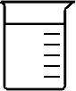
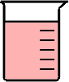

Cough Drop Activity







Help:
The objective of this activity is to achieve steady state by measuring the same shade of red with all five beakers. However, measuring white five times does not count.
Instructions:
You may control both the addition of cough drops and the water flow rate in this system. Start by getting a feel for the controls by adding several cough drops and starting the water flow by typing in a flow rate between 1-10 mL/s.
a. Start with at least 2 (but up to 12) cough drops in the funnel.
b. Allow water to flow into the funnel. Adjust the flow rate to the desired level (note you may change this as the experiement progresses or you may leave it constant).
c. As needed, add cough drops to the system (note that you do not have to completely dissolve a cough drop before an additional cough drop is needed -- think about this).
d. Collect samples from the outflow using the "Take a Measurement" button. Examine the resulting shade of pink, and make adjustments as needed. The color bar at the bottom of the screen is there to help you track the concentration (you may use the numbers 1-6 to refer to the deepness of the red color).
e. Adjust cough drop addition and flow rate until you can achieve your goal of producing a color that is consistent over at least five samples. You can use the blue stopwatch to help your timing.
The objective of this activity is to achieve steady state by measuring the same shade of red with all five beakers. However, measuring white five times does not count.
Instructions:
You may control both the addition of cough drops and the water flow rate in this system. Start by getting a feel for the controls by adding several cough drops and starting the water flow by typing in a flow rate between 1-10 mL/s.
a. Start with at least 2 (but up to 12) cough drops in the funnel.
b. Allow water to flow into the funnel. Adjust the flow rate to the desired level (note you may change this as the experiement progresses or you may leave it constant).
c. As needed, add cough drops to the system (note that you do not have to completely dissolve a cough drop before an additional cough drop is needed -- think about this).
d. Collect samples from the outflow using the "Take a Measurement" button. Examine the resulting shade of pink, and make adjustments as needed. The color bar at the bottom of the screen is there to help you track the concentration (you may use the numbers 1-6 to refer to the deepness of the red color).
e. Adjust cough drop addition and flow rate until you can achieve your goal of producing a color that is consistent over at least five samples. You can use the blue stopwatch to help your timing.